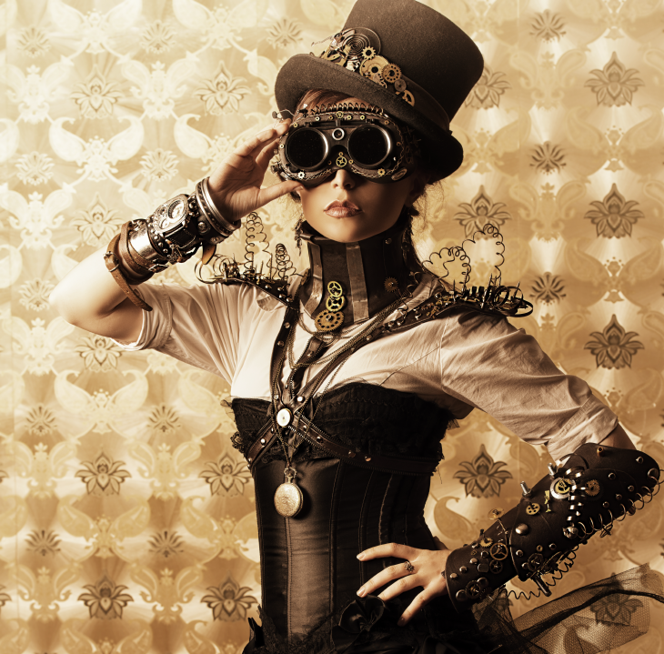
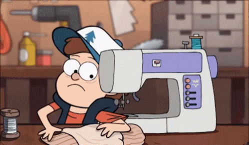

My interest is rustic steampunk fashion and sewing. I have always had an eye for rustic houses, rooms that have a Europian theme or kitchens that have a rustic medieval feel.
Victorian and steampunk fashion is also an intrest of mine. steampunk is a genre of science fiction that has a historical setting and typically features steam-powered machinery rather than advanced technology. Steampunk clothing is the combonation of machinery and victorian fashion. I like the style so much that I wanted to apply it to my waredrobe. But I wouldn't dress as dramaticly its more of a watered down version of the style
 . At first we (me and my mother) would go out and buy the nessery garments for a complete look. But then my mother no longer wanted to buy the clothes so I decided to make them myself which is how I got into sewing
. At first we (me and my mother) would go out and buy the nessery garments for a complete look. But then my mother no longer wanted to buy the clothes so I decided to make them myself which is how I got into sewing
 I've been sewing for about three years now and my "new waredrobe" is coming together very slowly. I plan on "re-modeling my whole attire"